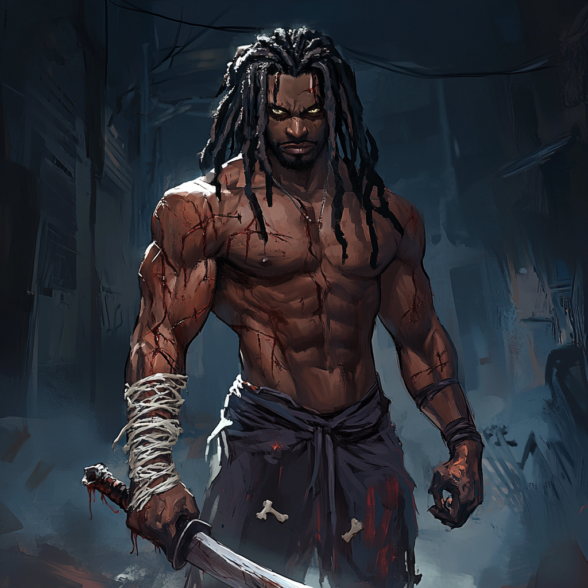

Ghost Machete: Warlord of the Shadows

Commander Demissie "Ghost Machete" Tekle built his reputation in the Ethiopian civil conflicts. Originally a military officer, he turned warlord in the border regions by using experimental military tech to establish control over disputed territories.
His phase-shifting abilities stem from stolen prototype equipment intended for UN peacekeeping forces. This experimental phase-tech gave him a significant advantage – he could appear inside secured compounds, eliminate resistance, and vanish before reinforcements arrived.
His forces specialize in village raids and resource control, particularly focusing on rare earth mineral deposits. In one mission, a UN investigation into missing aid shipments turned violent when international forces moved to intervene; Ghost Machete's forces ambushed them using his inside knowledge of military protocols. The conflict exposed his ties to international arms dealers and tech smugglers.
Key Elements:
His personal hunt for Mistwalker is driven by both revenge and practicality—any surviving witnesses to his operations represent loose ends he cannot tolerate.